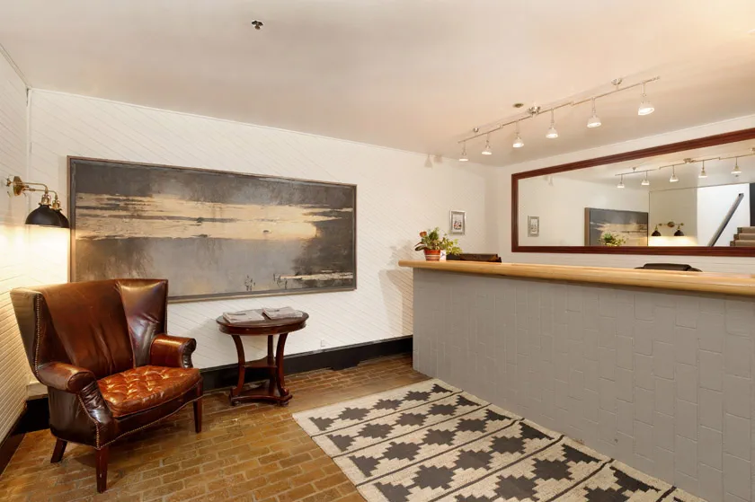
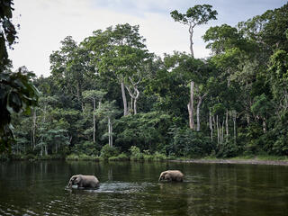

Top Attractions in Congo Brazzaville
Explore the beauty and culture of Congo Brazzaville through these must-see attractions.
Independence Square
Independence Square is a historical site in the heart of Brazzaville. It offers a stunning view and rich history about Congo's independence.
Mount Léké

Mount Léké is perfect for those who enjoy hiking and nature. The scenic views are a must for any traveler in Congo Brazzaville.
Congo River
The Congo River is one of the longest rivers in the world and offers river tours for a unique experience.